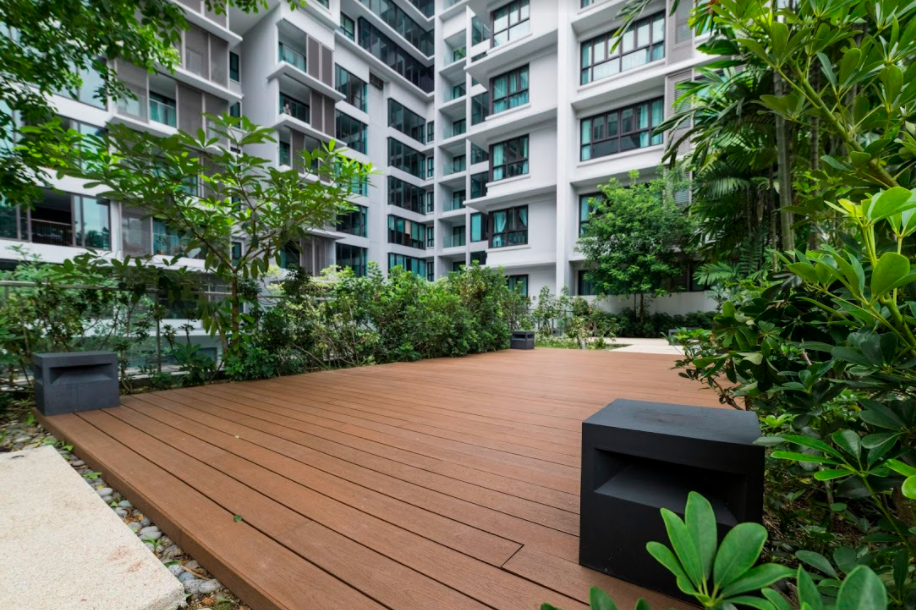
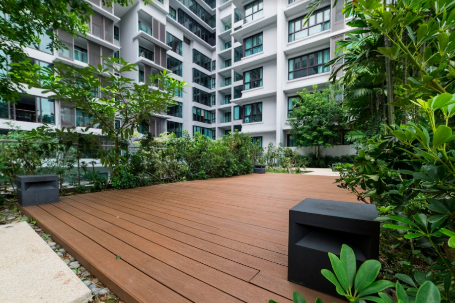

About Sastra
SASTRA, a unique residential experience built on prime freehold land is nestled in the heart of Taman U-Thant, Kuala Lumpur. This residential project is a joint venture project between CapitaLand, which is a prominent and established developer in Malaysia and Singapore and Juta Asia Corporation. Located amongst prominent embassies, consulates and high commissions, SASTRA brings you a luxury living inspired by U-Thant’s vision of world peace, racial and spiritual diversity in a harmonious and pleasant community. The stage is set as you embark on a journey with your own stories to tell, and even more to live.


 
